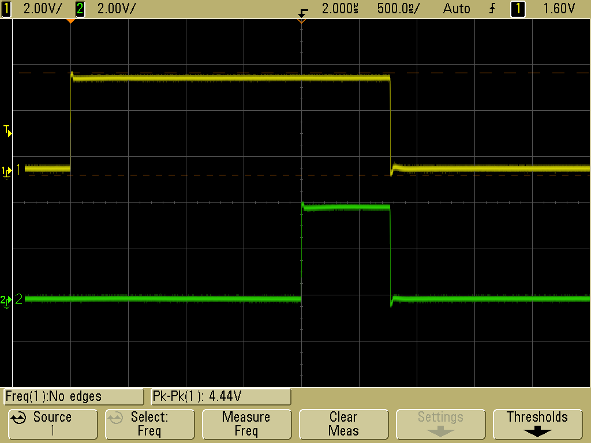

|
gpib-utils
supports save/restore configuration, print screen, and light automated test
on a variety of electronic test instruments
gpib-utils uses linux-gpib software to communicate with instruments using a GPIB USB or PCI adapter, or built-in VXI-11 support to communicate with instruments via Ethernet. Download the latest gpib-utils and enjoy! |

|